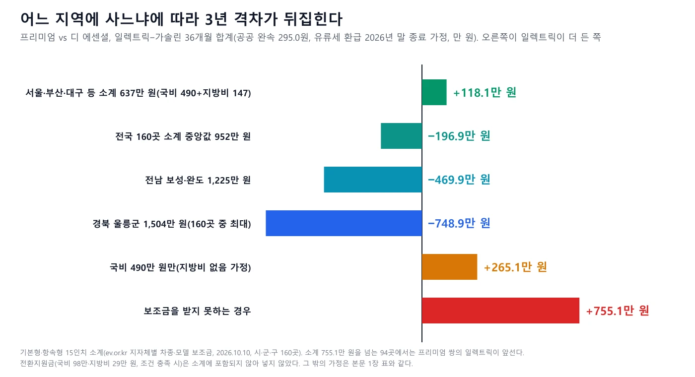
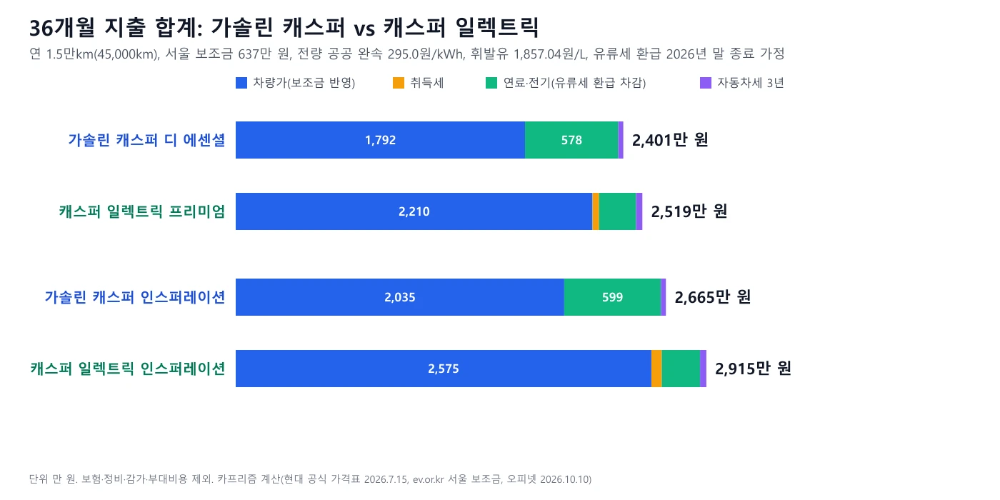
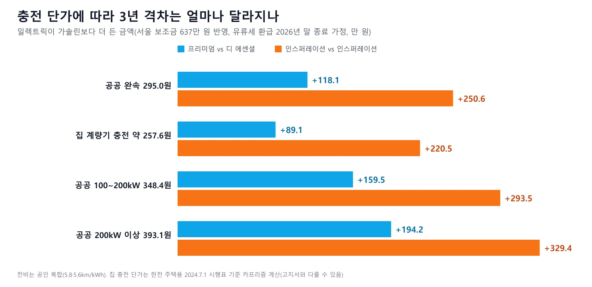
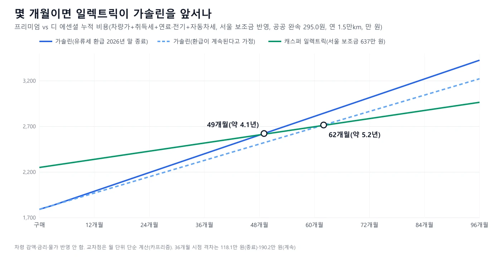

▲ 두 대 중 전면 램프 모양으로 일렉트릭(왼쪽)과 가솔린(오른쪽)을 구분했을 뿐 트림·연식은 확정하지 않는다. 번호판은 모자이크했다 ⓒ Damian B Oh, CC BY-SA 4.0, Wikimedia Commons(번호판 가림 편집)
"전기차가 비싸도 보조금 받으면 3년이면 본전 아닌가?" 2026년 7월 15일 현대차 공식 가격표(개별소비세 5% 환원 이후)로 가솔린 캐스퍼 디 에센셜(1,792만 원)과 캐스퍼 일렉트릭 프리미엄(세제혜택 후 2,847만 원)을 같은 조건에 놓고 계산했다. 조건은 구매 시점 2026년 10월, 연 1만 5,000km씩 36개월(45,000km), 서울 거주자가 받는 보조금 637만 원, 충전은 전량 공공 완속(kWh당 295.0원), 휘발유는 오피넷 전국 평균 1,857.04원/L, 유류세 환급은 현행 일몰(2026년 12월 31일)대로 끝나는 경우다. 결과는 일렉트릭이 가솔린보다 36개월 합계가 1,180,871원(약 118만 원) 더 든다. 같은 계산에서 일렉트릭이 가솔린을 따라잡는 시점은 49개월째(약 4.1년)다. 다만 이 118만 원은 보조금 소계가 가장 낮은 축인 서울(637만 원) 기준이다. 무공해차 통합누리집에서 시·군·구 160곳을 모두 조회하면 소계 중앙값은 952만 원이고, 프리미엄 쌍의 손익이 뒤집히는 755만 원을 넘는 곳이 94곳이다(3장). 보험·정비·감가는 공식 통계를 확인하지 못해 계산에서 뺐다.
이 글은 두 차종의 36개월 비용 비교에 집중한다. 경차 취득세 면제·통행료 50%·공영주차 감면의 법령 구조와 5년 합계는 경차 한 대 5년 타면 얼마가 남나? 기사에서, 충전요금 5단계와 구독 손익분기는 전기차 충전요금 구조 기사에서 다뤘다. 캐스퍼 일렉트릭 오너 후기는 후기 종합 기사, 출고 대기는 출고 대기 28개월 기사에 있다. 같은 혜택 설명은 반복하지 않고 이 글에 필요한 숫자만 가져왔다.
1. 비교의 규칙 — 어떤 두 차를, 어떤 조건으로 맞췄나
가솔린 캐스퍼는 경형자동차이고 캐스퍼 일렉트릭은 아니다(전장 3,825mm로 경형 규격 3.6m 초과, 10월 4일 기사에서 확인). 그래서 두 차는 받는 세금 혜택의 종류가 다르다. 같은 출발선을 만들기 위해 현대차 캐스퍼 온라인 공식 가격표에서 트림 두 쌍을 골랐다. 가솔린과 일렉트릭의 같은 이름 트림이 사양까지 같다는 뜻은 아니다. 가격표에서 확인한 공통점은 10.25인치 내비게이션·6스피커가 기본이라는 점 정도이며, 시트·안전·편의 사양을 일대일로 대조하지는 않았다.
| 쌍 | 가솔린 캐스퍼 | 캐스퍼 일렉트릭 |
|---|---|---|
| ① 입문+내비 | 디 에센셜 1,792만 원, 가솔린 1.0, 15인치, 복합 14.3km/L | 프리미엄 세제혜택 후 2,847만 원(전 2,995만 원), 42kWh, 15인치, 복합 5.8km/kWh(1회 충전 278km) |
| ② 최상위 직전 | 인스퍼레이션 2,035만 원, 가솔린 1.0, 17인치, 복합 13.8km/L | 인스퍼레이션 세제혜택 후 3,212만 원(전 3,379만 원), 49kWh, 15인치, 복합 5.6km/kWh(1회 충전 315km) |
| 항목 | 가정 | 근거 |
|---|---|---|
| 구매 시점 | 2026년 10월 신차 현금 구매 | 할부·리스 이자는 넣지 않음 |
| 주행 | 연 15,000km × 3년 = 45,000km | 카프리즘 가정(한국 평균 주행거리 통계는 직접 확인하지 못함) |
| 거주지 | 서울(보조금 조회 표 기준) | 다른 지역은 3장·7장에서 따로 비교 |
| 휘발유 | 1,857.04원/L | 한국석유공사 오피넷 전국 평균, 2026.10.10(서울 평균 1,903.17원) |
| 충전 | 전량 공공 완속 295.0원/kWh(30kW 미만) | 무공해차 통합누리집 2026.8.1 시행 5단계 요금. 다른 단가는 5장 |
| 연비·전비 | 공인 복합 14.3·13.8km/L, 5.8·5.6km/kWh | 캐스퍼 온라인 제원 페이지 정부 공인 표준연비, 실주행과 다를 수 있음 |
| 유류세 환급 | 기본: 2026.12.31 일몰, 이후 없음(구매 후 2026년 3개월분만 반영) | 생활법령정보(2026.9.15 기준). 연장되면 3년 전체를 받는 경우도 계산 |
| 제외 | 보험·정비·감가·부대비용·선택 품목 | 8장 참고 |
왜 "총소유비용"이 아니라 "36개월 지출"인가
총소유비용(TCO)은 보통 구매가·세금·연료·보험·정비·감가를 모두 더한다. 이 글은 공식 가격표·공식 제원·공식 단가로 확인한 항목만 더했고, 보험료·정비비·3년 뒤 중고 시세는 공식 통계를 직접 확인하지 못해 뺐다. 그래서 숫자는 "차를 사서 3년간 쓸 때 확인된 현금 지출의 합"이다. 3년 뒤 팔 때 돌려받는 돈(잔존가치)이 빠져 있으므로 비싼 차가 더 많이 손해 보는 쪽으로 읽으면 안 된다.
2. 가격표와 세금 기준 — 개소세 5%가 돌아온 뒤의 값
캐스퍼 온라인 가격 페이지의 두 가격표는 모두 "2026년 7월 15일 기준"이고, 개별소비세 5%가 정상세율로 돌아온 7월 1일 이후 값이다. 가솔린 캐스퍼는 경형자동차라 개별소비세·교육세가 처음부터 붙지 않는다(생활법령정보). 일렉트릭은 환경친화적자동차 감면을 받아 가격표에 "세제혜택 전/후"가 나란히 적혀 있고, 후 가격의 설명은 "교육세 감면 기준(교육세 90만 원 한도)"이다. 조세특례제한법 제109조 제5항·제6항은 전기차 개별소비세 감면 한도를 300만 원, 적용 기한을 2026년 12월 31일까지 반출분으로 정한다(국가법령정보센터 원문 확인). 이 글은 일렉트릭에 "세제혜택 후" 가격만 쓰고, 혜택이 끝나면 늘어날 폭은 아래 표의 "전" 가격으로 따로 보였다.
| 트림 | 판매가격 | 복합연비(15인치/17인치) |
|---|---|---|
| 스마트 | 15,460,000 | 14.3 / 13.8km/L |
| 디 에센셜 | 17,920,000 | 14.3 / 13.8km/L |
| 인스퍼레이션 | 20,350,000 | 13.8km/L(17인치 기본) |
| 트림 | 세제혜택 전 | 세제혜택 후 | 혜택 전후 차이 | 배터리 |
|---|---|---|---|---|
| 프리미엄 | 29,950,000 | 28,470,000 | 1,480,000 | 42kWh |
| 인스퍼레이션 | 33,790,000 | 32,120,000 | 1,670,000 | 49kWh |
| 크로스 | 35,900,000 | 34,120,000 | 1,780,000 | 49kWh |
| 라운지 | 36,370,000 | 34,570,000 | 1,800,000 | 49kWh |
이 글의 비교는 ① 디 에센셜 vs 프리미엄(가솔린 1,792만 원 vs 일렉트릭 2,847만 원), ② 인스퍼레이션 vs 인스퍼레이션(2,035만 원 vs 3,212만 원)이다. 일렉트릭 인스퍼레이션 후 가격은 공식 가격표 32,120,000원이다(2027 캐스퍼 일렉트릭 출시 보도자료의 3,212만 원과 일치). 가격표 값은 옵션과 취득세·부대비용을 뺀 소비자가격이다.
취득세 — 가솔린은 0원, 일렉트릭은 감면 후 남는 금액
취득세는 부가세를 뺀 가격(과세표준)에 세율을 곱하고 감면 한도만큼 뺀다. 경형 승용차는 세율 4%에 75만 원 한도(지방세특례제한법 제67조 제1항, 2027년 12월 31일까지), 전기차는 7%에 140만 원 한도(같은 법 제66조 제4항, 2026년 12월 31일까지)다(국가법령정보센터 조문 원문과 생활법령정보 2026.9.15 기준). 구매가 2026년 말까지라는 가정이므로 140만 원 한도를 적용했다. 한도가 줄거나 끝나는 2027년 이후는 확인한 공식 자료가 없어 계산하지 않았다.
| 차량 | 판매가 | 과세표준 | 산출세액 | 감면 | 납부세액 |
|---|---|---|---|---|---|
| 가솔린 디 에센셜(4%) | 17,920,000 | 16,290,909 | 651,636 | −750,000 한도 | 0 |
| 가솔린 인스퍼레이션(4%) | 20,350,000 | 18,500,000 | 740,000 | −750,000 한도 | 0 |
| 일렉트릭 프리미엄(7%) | 28,470,000 | 25,881,818 | 1,811,727 | −1,400,000 한도 | 411,727 |
| 일렉트릭 인스퍼레이션(7%) | 32,120,000 | 29,200,000 | 2,044,000 | −1,400,000 한도 | 644,000 |
가솔린 인스퍼레이션은 한도에 간신히 걸쳐 있다. 75만 원 ÷ 4% = 1,875만 원이 과세표준 한도이므로 판매가로는 약 2,062.5만 원까지 면제인데, 인스퍼레이션 기본가 2,035만 원은 여유가 27.5만 원뿐이다. 선택 품목을 이 이상 담으면 초과분에 취득세 4%가 붙는다(옵션은 이 글에서 계산하지 않았다).
3. 보조금 — 국비 490만 원과 지방비는 어디가 얼마나 다른가
무공해차 통합누리집 "지자체별 차종·모델 보조금"에서 캐스퍼 일렉트릭을 조회하면 서울은 기본형 15인치(프리미엄)와 항속형 15인치(인스퍼레이션 기본 휠) 모두 국비 490만 원, 지방비 147만 원, 소계 637만 원으로 나온다. 크로스 17인치는 국비 487만 원, 지방비 146만 원, 소계 633만 원이다. 전환지원금(국비 98만 원, 지방비 29만 원)은 소계에 포함되지 않는다고 표에 표기돼 있어 이 글에서도 뺐다. 부산광역시와 대구광역시를 조회해도 기본형 15인치는 같은 637만 원이었다.
조회 160곳에서 소계는 637만~1,504만 원
광역시·도별 목록을 열고 페이지를 넘겨 시·군·구 160곳을 모두 조회했다. 캐스퍼 일렉트릭 기본형·항속형 15인치 소계는 국비 490만 원에 지방비 147만~1,014만 원이 더해져 637만~1,504만 원으로 나뉜다. 가장 낮은 637만 원은 서울·부산·대구 등 22곳이고, 경기도 31곳은 637만~955만 원, 전남 보성·완도는 1,225만 원, 경북 울릉군은 1,504만 원이다. 160곳의 중앙값은 952만 원이다. 이 글이 비교의 기준으로 삼은 서울 637만 원은 지방비가 가장 작은 쪽이다. 프리미엄 쌍은 소계 755.1만 원(=637만 원+격차 118.1만 원)을 넘으면 일렉트릭이 앞서는데 그런 곳이 94곳(59%)이고, 인스퍼레이션 쌍은 887.6만 원을 넘는 81곳이다. 단 지방비 소진·거주 요건·출고 시점에 따라 실제로 받는 금액이 바뀌며, 보조금 접수·출고 잔여 대수와 신청 자격은 사는 곳 공고에서 직접 확인해야 한다. 국비 외 전환지원금은 뺐다. 지자체별 차종·모델 보조금 바로가기
현대차 캐스퍼 전기차 가이드는 보조금 신청 대상을 "구매 보조금을 신청하는 지자체에 일정 거주 요건을 충족하는 개인·개인사업자·법인"으로, 지원 대수는 "2년 내 1대"로 안내한다. 보조금은 출고 10일 전에 지원 대상자로 확정된 뒤 금액을 다시 확인하고, 선택한 결제 수단으로 보조금을 뺀 차량대금을 낸다. 즉 계약 시점에 637만 원이 확정되는 것이 아니다. 대기 중인 보조금 물량이 소진되면 금액이 바뀔 수 있다는 점이 가장 큰 불확실성이다.

▲ 보조금 소계별 36개월 격차(프리미엄 vs 디 에센셜). 서울 637만 원이면 가솔린이 싸지만 소계 755만 원을 넘으면 뒤집히고, 보조금을 못 받으면 격차가 755만 원까지 벌어진다 ⓒ 카프리즘 제작(현대차 공식 가격표·ev.or.kr 보조금 조회 기반)
4. 연료비와 전기료 — 공인 연비·전비로 45,000km를 환산하면
공인 복합연비는 캐스퍼 온라인 제원 페이지의 "정부 공인 표준연비 및 등급"을 그대로 썼다. 가솔린 1.0은 15인치 타이어 14.3km/L, 17인치 13.8km/L(도심 13.4·13.0, 고속 15.5·14.8)이고 일렉트릭은 기본형(42kWh) 15인치 5.8km/kWh(1회 충전 278km), 항속형(49kWh) 15인치 5.6km/kWh(315km), 항속형 17인치 5.2km/kWh(295km)다. 표준 모드 값이라 도로·운전·외기 온도에 따른 실주행과 차이가 난다는 문구가 함께 적혀 있다. 한파에서 전비가 떨어지면 일렉트릭에 불리하다.
| 차량 | 공인 효율 | 필요 에너지 | 단가 | 36개월 비용 | 1km당 |
|---|---|---|---|---|---|
| 가솔린 디 에센셜(15") | 14.3km/L | 3,147L | 1,857.04원/L | 5,843,832 | 129.9원 |
| 가솔린 인스퍼레이션(17") | 13.8km/L | 3,261L | 1,857.04원/L | 6,055,565 | 134.6원 |
| 일렉트릭 프리미엄(42kWh, 15") | 5.8km/kWh | 7,759kWh | 295.0원/kWh(공공 완속) | 2,288,793 | 50.9원 |
| 일렉트릭 인스퍼레이션(49kWh, 15") | 5.6km/kWh | 8,036kWh | 295.0원/kWh(공공 완속) | 2,370,536 | 52.7원 |
수식은 가솔린이 45,000 ÷ 14.3 × 1,857.04, 일렉트릭이 45,000 ÷ 5.8 × 295.0이다. 에너지 비용만 보면 일렉트릭이 3년에 약 355만 원 싸다(프리미엄 vs 디 에센셜, 5,843,832 − 2,288,793 = 3,555,039원). 문제는 이 355만 원으로 차량가 차이를 얼마나 메우느냐다. 다음 장에서 합산한다. 오피넷 전국 평균은 가격 추세가 바뀌면 곧 달라지므로 계산 전에 현재 값을 다시 확인해야 한다. 오피넷 오늘의 유가 바로가기

▲ 캐스퍼 일렉트릭 전시차. 이 글의 전비는 공인 복합 값이며 실제 주행과 다를 수 있다 ⓒ jasonryudotnet, CC BY 3.0, Wikimedia Commons
5. 충전 단가 네 가지 — 공공 완속·집·급속·초급속
일렉트릭의 연료비는 어디서 충전하느냐로 크게 갈린다. 무공해차 통합누리집의 공공 충전요금 기준단가는 출력별 5단계로, 30kW 미만 295.0원, 30~50kW 307.2원, 50~100kW 325.6원, 100~200kW 348.4원, 200kW 이상 393.1원(kWh당, 8월 1일 시행)이다. 집에서 충전하면 한전 주택용 저압 요금표에 합산되므로 기존 사용량에 따라 단가가 달라진다. 한전 요금표(2024년 7월 1일 시행본, 기타계절 기준)의 값은 기본요금 910원·1,600원·7,300원, 전력량요금 200kWh 이하 120.0원, 201~400kWh 214.6원, 400kWh 초과 307.3원이다. 여기에 기후환경요금(요금표 예시 9원/kWh)과 연료비조정단가(상하한 ±5원, 예시 +5원), 부가세 10%, 전력산업기반기금(요금표 예시 3.2%)이 붙는다.
| 월 합계 사용량 구간 | 계산식 | 추가 1kWh당 |
|---|---|---|
| 1~200kWh | (120.0 + 9 + 5) × 1.127 | 약 151.0원 |
| 201~400kWh | (214.6 + 9 + 5) × 1.127 | 약 257.6원 |
| 400kWh 초과 | (307.3 + 9 + 5) × 1.127 | 약 362.1원 |
1.127은 부가세 10%와 전력산업기반기금 2.7%를 더한 계수다(전기요금에 각각 곱해 더함). 2026년 10월 10일 한전 한전ON 요금 안내 페이지는 "전력사업기반기금: 전기요금 X 2.7%"로 적는 반면 요금표 PDF(2024.7.1 시행)의 계산 예시는 3.2%로 적어 두 값이 달랐다. 현행 안내 페이지의 2.7%를 따랐고 PDF 예시의 3.2%가 왜 다른지는 확인하지 못했다(3.2% 적용 시 추가분 단가는 0.5%포인트만큼 높아 kWh당 약 1원 차이). 고지서에서 최종 확인해야 한다. 기후환경요금은 2026년 4분기 요금 동결 보도로 유지됐다고 판단했을 뿐 요금표에서 직접 확인하지 못했다. 하계(7~8월)는 누진 구간이 달라 위 표를 쓸 수 없다. 한전 전기요금표 바로가기 공공 충전요금 안내 바로가기
집 충전이 항상 가장 싼 건 아니다
월 합계 사용량이 400kWh를 넘는 달에는 집에서 충전한 추가분 단가가 362.1원까지 올라 공공 100~200kW 급속(348.4원)보다 비싸다. 일렉트릭 프리미엄은 충전으로 월 약 216kWh(45,000km ÷ 36개월 ÷ 5.8km/kWh)가 늘어난다. 기존 사용량이 월 184kWh 이하면 합계가 400kWh 안에 머물지만 그보다 많은 집은 일부가 362.1원 구간에 걸린다. 이 글의 집 충전 단가 257.6원은 추가분이 201~400kWh 구간에만 머무는 이상적인 경우이고 기본요금 단계 상승은 넣지 않았다. 그래서 기본 시나리오는 공공 완속 295.0원으로 잡았다. 구독·혼합 충전 계산은 충전요금 구조 기사에 있다.
6. 36개월 합계표 — 항목별로 더해 보면
항목은 차량가, 취득세, 보조금, 연료·전기, 유류세 환급, 자동차세다. 자동차세는 가솔린이 998cc × 80원 × 1.3(지방교육세 30%) = 103,792원/년(생활법령정보 세율), 일렉트릭이 연 130,000원(자동차세 10만 원+교육세 3만 원)이다. 지방세법 제127조 제1항 제3호 "그 밖의 승용자동차"의 비영업용 세액이 100,000원이고(국가법령정보센터 원문 확인), 지방교육세는 자동차세액의 30%다(같은 법 제151조). 다만 전기승용차를 이 호로 분류하는 시행령 조문은 직접 열람하지 못했고 기존 기사(10월 4일)와 같은 값을 썼다. 가솔린의 cc당 80원은 같은 조 제1항 제1호 표(비영업용 1,000cc 이하)에서 확인했다. 차령 감액은 3년차 이후 적용이라 3년 합계에서는 무시했다.
| 항목 | 가솔린 디 에센셜 | 일렉트릭 프리미엄 | 일렉트릭−가솔린 |
|---|---|---|---|
| 차량가(가격표) | 17,920,000 | 28,470,000 | +10,550,000 |
| 취득세 | 0 | 411,727 | +411,727 |
| 보조금 | 0 | −6,370,000 | −6,370,000 |
| 연료·전기(45,000km) | 5,843,832 | 2,288,793 | −3,555,039 |
| 유류세 환급(2026년 3개월분) | −65,559 | 0 | +65,559 |
| 자동차세 3년 | 311,376 | 390,000 | +78,624 |
| 36개월 합계 | 24,009,649 | 25,190,520 | +1,180,871 |
| 항목 | 가솔린 인스퍼레이션 | 일렉트릭 인스퍼레이션 | 일렉트릭−가솔린 |
|---|---|---|---|
| 차량가(가격표) | 20,350,000 | 32,120,000 | +11,770,000 |
| 취득세 | 0 | 644,000 | +644,000 |
| 보조금 | 0 | −6,370,000 | −6,370,000 |
| 연료·전기(45,000km) | 6,055,565 | 2,370,536 | −3,685,030 |
| 유류세 환급(2026년 3개월분) | −67,935 | 0 | +67,935 |
| 자동차세 3년 | 311,376 | 390,000 | +78,624 |
| 36개월 합계 | 26,649,006 | 29,154,536 | +2,505,530 |

▲ 쌍별 36개월 합계. 차량가 격차가 크고 연료·전기에서 일부를 되찾는 구조다 ⓒ 카프리즘 제작(현대차 공식 가격표·공식 제원 기반)
일렉트릭은 연료·전기에서 약 355만 원(프리미엄)·369만 원(인스퍼레이션)을 아끼지만 차량가 격차 1,055만 원·1,177만 원에서 보조금 637만 원을 빼고 취득세 41.2만 원(프리미엄)·64.4만 원(인스퍼레이션)이 늘어난 몫을 더하면 초기 비용 차이가 459만 원·604만 원으로 남는다. 이 차이를 3년 연료·전기 절감(355만 원·369만 원)으로 다 메우지 못하고, 자동차세 차이와 가솔린이 받는 환급 몫이 더해져 118.1만 원·250.6만 원이 남는다. 환급이 연장돼 가솔린의 3년 환급이 786,713원(프리미엄 쌍)으로 늘면 격차는 1,902,025원, 인스퍼레이션 쌍은 3,252,812원이 된다.
7. 조건을 바꾸면 — 충전 단가, 환급, 주행거리
가장 큰 변수는 충전 장소다. 공공 완속 295.0원을 집 충전 257.6원으로 바꾸면 프리미엄 쌍 격차는 89.1만 원으로 줄고, 공공 100~200kW 348.4원이면 159.5만 원, 200kW 이상 393.1원이면 194.2만 원으로 커진다. 아래는 두 쌍을 같은 조건으로 놓은 결과다.
| 충전 단가 | 프리미엄−디 에센셜 | 인스퍼레이션−인스퍼레이션 |
|---|---|---|
| 공공 완속 30kW 미만 295.0원 | +1,180,871 | +2,505,530 |
| 집 충전 추가분 201~400kWh 구간 약 257.6원 | +890,949 | +2,205,252 |
| 공공 100~200kW 348.4원 | +1,595,182 | +2,934,637 |
| 공공 200kW 이상 393.1원 | +1,941,992 | +3,293,833 |

▲ 충전 단가에 따른 3년 격차. 급속 위주로 충전하면 일렉트릭 불리 ⓒ 카프리즘 제작(무공해차 통합누리집 충전요금·한전 요금표 기반)
일렉트릭이 앞서려면 — 손익분기 두 가지 기준
같은 가정(서울 보조금, 공공 완속 295.0원)에서 36개월 안에 일렉트릭이 가솔린과 같아지는 연간 주행거리를 구하면 프리미엄 쌍은 연 20,022km(환급 일몰) 또는 23,503km(환급 3년 연장), 인스퍼레이션 쌍은 25,228km 또는 28,586km다. 연 1.5만km 가정에서는 월 단위로 누적했을 때 프리미엄 쌍이 49개월(약 4.1년), 환급 연장 가정이면 62개월(약 5.2년), 인스퍼레이션 쌍은 62개월 또는 78개월에 교차한다.

▲ 누적 비용 교차점. 구매 시점의 격차를 연료비 절감으로 메우는 데 4년 넘게 걸린다 ⓒ 카프리즘 제작(월 단위 단순 계산)
| 보조금 소계 | 일렉트릭−가솔린 36개월 | 비고 |
|---|---|---|
| 637만 원(서울·부산·대구 등 22곳) | +1,180,871 | 본문 기준. 조회 160곳 중 가장 낮은 소계 |
| 645만~698만 원(경기 성남·화성·의정부·안산·고양·수원·안양 등) | +570,871 | 645만 원 +1,100,871, 698만 원 +570,871. 격차는 줄지만 가솔린이 싸다 |
| 735만 원(평택·파주·이천 등 25곳) | +200,871 | 소계 755.1만 원 아래라 아직 가솔린이 싸다 |
| 764만 원(경기 동두천) | −89,129 | 교차점 755.1만 원을 넘으면 일렉트릭이 앞선다 |
| 833만 원(경기 광명, 전남 목포·여수·순천 등 7곳) | −779,129 | 일렉트릭이 약 77.9만 원 덜 듦 |
| 952만 원(160곳 중앙값, 충남·전북 대부분) | −1,969,129 | 일렉트릭이 약 196.9만 원 덜 듦 |
| 1,043만 원(경북 21곳) | −2,879,129 | 일렉트릭이 약 287.9만 원 덜 듦 |
| 1,225만 원(전남 보성·완도) | −4,699,129 | 일렉트릭이 약 469.9만 원 덜 듦 |
| 1,504만 원(경북 울릉군, 160곳 중 최대) | −7,489,129 | 일렉트릭이 약 748.9만 원 덜 듦 |
| 490만 원(국비만) | +2,650,871 | 지방비를 못 받는 경우 가정 |
| 0원 | +7,550,871 | 보조금 불가·소진 |
고속도로 통행료도 변수다. 경형자동차 통행료 50% 할인은 가솔린 캐스퍼에만 해당하고, 일렉트릭은 전기차 감면을 받는다. 정책브리핑이 전한 국토교통부 발표(2024.11.15)는 친환경차 감면을 2027년까지 3년 연장하되 감면율을 현행 50%에서 2025년 40%, 2026년 30%, 2027년 20%로 줄인다고 밝혔다. 유료도로법 시행령 조문 자체는 열람하지 못했고, 2028년 이후 감면이 이어지는지도 확인하지 못했다. 연 정가 통행료를 30만 원이라고 가정하면 3년 감면액은 가솔린 45만 원(경차 50% 유지 가정), 일렉트릭은 30%가 유지되면 27만 원, 위 일정대로 2026년 4분기 30%·2027년 20%이고 이후 감면이 없다면 약 8.3만 원이다. 그래서 가솔린이 약 18만~37만 원 유리하다. 이 금액은 합계표에 넣지 않았다. 공영주차장은 경차와 친환경차 모두 감면 대상이어서 차이를 두지 않았다(조례별로 다름, 10월 4일 기사 참고).
8. 계산에 넣지 않은 것과 확인하지 못한 것
| 항목 | 상태 | 방향성 |
|---|---|---|
| 자동차보험료 | 공식 통계를 직접 확인하지 못해 뺌 | 전기차는 수리비·차량가가 높아 보험료가 높을 수 있다는 보도가 있으나 수치 확인 못 함. 보험료는 가입자 조건별로 다름 |
| 정비·소모품 | 공식 통계 확인 못함. 엔진오일 교환이 없는 일렉트릭이 유리하다는 일반론만 가능 | 제외 |
| 잔존가치(3년 뒤 중고 시세) | 확인하지 못함 | 차량가 격차가 큰 일렉트릭이 감가액도 클 수 있으나 시세 자료를 확인하지 못함 |
| 도시철도채권 | 경형은 면제(생활법령정보). 일렉트릭의 매입·감면 금액은 확인하지 못함 | 제외 |
| 선택 품목·탁송·번호판 등 | 사람마다 다름 | 제외. 인스퍼레이션 17인치(일렉트릭), 액티브 등 선택품목 가격은 가격표에 있음 |
| 전환지원금 | 국비 98만·지방비 29만 원, 조건 충족 시(ev.or.kr 표기) | 소계에 포함되지 않아 제외 |
| 출고 대기 | 10월 8일 기준 일부 지자체 기획전 계약 미운영 공지가 있음 | 출고 대기 기사 참고. 계산은 2026년 10월 구매 가정 |
| 세제혜택 2027년 이후 | 일렉트릭 개소세 감면(조세특례제한법 제109조)과 취득세 140만 원(지방세특례제한법 제66조 제4항)은 2026년 12월 31일까지 | 재정경제부 2026년 세제개편안(2026.8.3 발표)은 전기차 개소세 감면 한도를 2027년 200만 원, 2028년 100만 원으로 줄여 연장하겠다고 했으나 국회 통과 여부와 취득세·유류세 환급 연장은 확인하지 못함. 구매 시점이 2027년으로 넘어가면 이 글의 숫자를 쓸 수 없음. 세제혜택 전 가격은 2장 표 |
9. 누구에게 어느 쪽이 맞나
이 글의 계산으로 본 선택 기준(서울 보조금 637만 원·공공 완속 295.0원 기준)
· 연 2만km 안팎 이상 타고 집·직장에서 완속 충전이 가능하면 일렉트릭이 36개월 안에 앞서기 시작한다(프리미엄 쌍 20,022km)
· 연 1만~1.5만km이고 충전이 급속 위주라면 가솔린이 36개월 합계에서 싸다. 이 경우 일렉트릭이 앞서는 시점은 4년 이후다
· 지자체 보조금이 가장 큰 변수다. 서울 소계 637만 원이면 가솔린이 118만 원 싸지만 소계 755만 원을 넘는 94곳(전체의 59%)에서는 프리미엄 쌍의 일렉트릭이 앞선다. 사는 곳 소계부터 확인하는 것이 먼저다
· 3년 안에 팔 계획이면 잔존가치가 변수다. 이 글은 잔존가치를 확인하지 못했다
· 구매 전에 확인할 것: 사는 곳 보조금 공고와 잔여 물량, 충전 환경, 환급 일몰 연장 여부 일렉트릭 공식 가격표 바로가기 가솔린 공식 가격표 바로가기

▲ 캐스퍼 일렉트릭 실내(전시차, 파일명 기준 인스퍼레이션). 실내 사양 차이는 이 글의 비용 계산에 넣지 않았다 ⓒ Damian B Oh, CC BY-SA 4.0, Wikimedia Commons

▲ 가솔린 캐스퍼는 경형 규격이다. 사진 속 트림은 확정하지 않는다 ⓒ Benespit, CC BY-SA 4.0, Wikimedia Commons
공식 숫자는 직접 다시 확인할 수 있다. 캐스퍼 공식 제원 일렉트릭 제원 바로가기 가솔린 제원 바로가기에서 공인 연비·전비를, 보조금은 무공해차 보조금 조회 바로가기에서 거주 지자체로 확인한다. 생활법령정보의 세금 안내는 전기차 세금 감면 바로가기 경차 유류세 환급 바로가기에서 볼 수 있다.
10. 요약
2026년 7월 15일 현대차 공식 가격표(개별소비세 5% 환원 이후), 연 1.5만km·36개월·서울 보조금 637만 원·공공 완속 295.0원·휘발유 1,857.04원/L·유류세 환급 2026년 말 종료 가정에서 가솔린 캐스퍼 디 에센셜은 36개월 합계 24,009,649원, 캐스퍼 일렉트릭 프리미엄은 25,190,520원으로 일렉트릭이 1,180,871원(약 118만 원) 더 든다.
인스퍼레이션끼리는 26,649,006원 vs 29,154,536원으로 격차 2,505,530원이다. 환급이 연장되면 격차가 1,902,025원·3,252,812원으로 커지고, 소계 755만 원을 넘는 시·군·구 94곳(조회 160곳 중)에서는 프리미엄 쌍에서 일렉트릭이 앞선다. 월 단위 누적으로는 프리미엄 쌍이 49개월째(약 4.1년) 교차한다.
보험료·정비비·잔존가치는 공식 통계를 확인하지 못해 뺐고, 일렉트릭 자동차세 연 13만 원 중 전기승용차를 "그 밖의 승용자동차"로 보는 시행령 분류는 직접 열지 못했다. 보조금 금액과 환급 일몰 연장 여부는 구매 시점 공고로 다시 확인해야 한다.